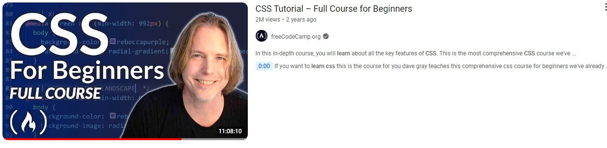

Learning CSS with freeCodeCamp: A Comprehensive Guide
BY: MIKE WHEELER
SEPTEMBER 25, 2024
Mastering CSS with Dave Gray on freeCodeCamp: A Full Course Breakdown
Highlighting one of the best free CSS learning resources available: the CSS Full Course on freeCodeCamp's YouTube channel, instructed by Dave Gray. This comprehensive course spans over 8 hours and is perfect for anyone looking to master CSS, from beginners to those wanting to solidify their knowledge.
What You’ll Learn from Dave Gray’s CSS Full Course
-
Introduction to CSS:
Dave starts with the essentials—what CSS is and how to link it to HTML files. He explains selectors, properties, and values in a way that's easy to follow, making it a great entry point for beginners. -
Text Styling:
You’ll explore different ways to style text, learning how to modify fonts, sizes, weights, and colors. Dave shows how to apply custom fonts to your website using web fonts, enhancing the visual appeal of your pages. -
Layouts with Flexbox and Grid:
One of the highlights of the course is its thorough coverage of Flexbox and CSS Grid. These modern layout techniques are essential for building responsive web designs. Dave breaks down each method, demonstrating how to create layouts that adapt seamlessly across devices. -
Responsive Design:
Dave delves into responsive design by teaching how to use media queries to adjust layouts based on screen size. He explains how to ensure your designs look great on everything from large desktop monitors to small mobile screens. -
CSS Animations and Transitions:
If you’re looking to make your websites more interactive, Dave covers CSS animations and transitions. You’ll learn how to create smooth effects that improve user experience, from hover effects to keyframe animations. -
Project-Based Learning:
Throughout the course, Dave emphasizes practical projects. You’ll code along with him, building real-world designs and applying the concepts you've learned in real-time. This hands-on approach helps solidify your CSS skills.
Why Dave Gray’s Course Stands Out
-
Engaging and Clear Instruction:
Dave Gray is known for his clear explanations and step-by-step guidance, making CSS approachable for all levels of learners. -
Free and Accessible:
As part of freeCodeCamp’s mission, this entire course is completely free and available on YouTube with no ads or paywalls. -
Comprehensive Learning:
From the basics to advanced techniques, this course covers all you need to know about CSS, making it a one-stop resource for your CSS journey.